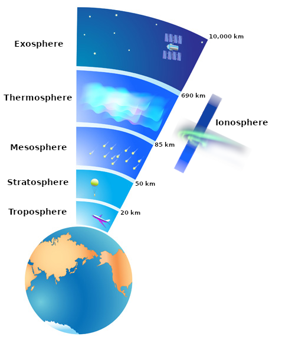
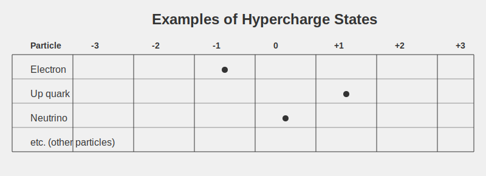
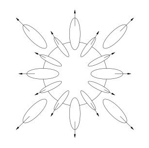
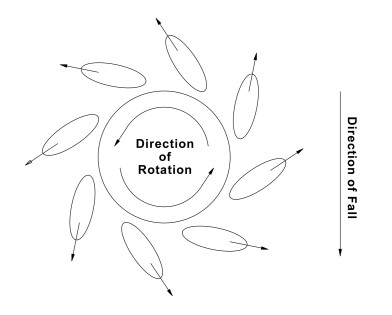
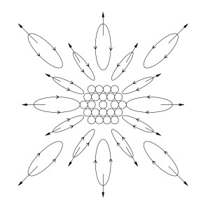
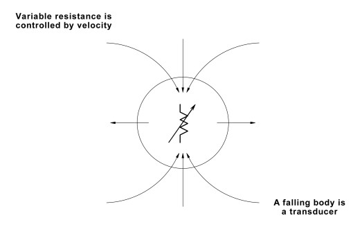

Chapter 4: Introduction to Theory and Unity of All Things
INTRODUCTION TO THEORY
Introduction:
Our purpose here is not to write a text book on physics, but rather to present this theory in its simplest form, so it may be understood by layman and physicist alike. We will make no attempt to appease the scientific community in this presentation, as we know from long experience that they will reject the evidence of their own eyes, if that evidence should challenge what they have accepted as physical "law". In other words then, this paper will simply explain what is happening in our physical world and why. All of the mathematical calculations that go with the theory will be left for another, more appropriate time.
We will begin this discussion by stating that the force which unifies all things is motion, for without motion there is nothing, and we will then show the dynamics of a body in motion (falling body). From there we will enter into brief discussions on energy to mass conversion, mass to energy conversion, antimatter, and will summarize with a short explanation of the equation which unifies all things, i.e., mass, energy, and forces.
It is not an easy task to relearn physics, we know, but this theory has been tested and is correct, so it is well worth the effort to study this material carefully. If what is being said is comprehended, the reader should be able to begin to apply the information to the earth in general, and to what is happening to the ionosphere
ionosphere: a layer of Earth's upper atmosphere that contains a high concentration of electrically charged particles (ions). Ions can be either positively (cations) or negatively charged (anions).
It's located roughly 50 to 400 miles (80 to 650 kilometers) above the Earth's surface.

Source: claude.ai
in particular. Once atomic structure has been explained, the reader will also begin to see how, using technologies based on correct physics, we can repair the damage and place this planet back into its proper balance if we work together.
UNITY OF ALL THINGS
THEORY
We have already stated that motion is the catalyst by which all else exists. For this reason we refer to motion as the creative force. We will now further state that the four forces The four fundamental forces in physics are:
1. Gravity: The force that pulls objects towards each other, keeping planets in orbit and making things fall to the ground.
2. Electromagnetic force: The force that causes attraction or repulsion between electric charges and magnets.
3. Strong nuclear force: The force that holds the parts of an atom's nucleus together.
4. Weak nuclear force: The force responsible for certain types of radioactive decay in atoms. that have been identified by the scientific community are in reality one force in four of its different actions. This force manifests itself in different actions based on predictable conditions and its stage in a repetitious, wonderfully simple cycle called nature. Currently, due to the work of Fischbach
Ephraim Fischbach is an American physicist and a professor at Purdue University. He is best known for his attempts to find a fifth force of nature.

Source: Wikipedia
and Aronson
Sam Aronson is an American physicist, formerly president of the American Physical Society in 2015 and also formerly the director of the Brookhaven National Laboratory from 2006 to 2012.
 Source: Wikipedia
, the scientific community is speculating that perhaps all bodies do not accelerate at the same rate, but instead of backing up and questioning existing "law", these scientists are now busy hypothesizing that there is yet another force, which they have tentatively named hypercharge
Hypercharge: A way to categorize tiny particles smaller than atoms. It can be positive, negative, or zero. Most particles have values between -1 and +1, but some can go up to -2 or +3. It helps scientists group and understand these tiny particles.
Source: Wikipedia
, the scientific community is speculating that perhaps all bodies do not accelerate at the same rate, but instead of backing up and questioning existing "law", these scientists are now busy hypothesizing that there is yet another force, which they have tentatively named hypercharge
Hypercharge: A way to categorize tiny particles smaller than atoms. It can be positive, negative, or zero. Most particles have values between -1 and +1, but some can go up to -2 or +3. It helps scientists group and understand these tiny particles.

Source: claude.ai
. We know this is not correct! What they have stumbled upon is in fact no more than the unified force displaying its repulsive action. Our generic term for the unified force is neutral energy, and we will now attempt to show how it manifests itself in the physical world.
Falling Bodies
For the purposes of this paper, the term falling body is defined as any body which moves, or "falls" through a gravitational field. This includes all subatomic particles, solar systems, galaxies, universes, universal vortexes, and yet greater expanses. As indicated in our tests and illustrated below, a falling body produces about itself a force of extracted energy.
Fig. 14
This extracted energy attempts to return to the body it's been extracted from. As shown in figure 14, this cycle produces a force around the body. The result is a gravitational field which will be felt as an attracting force by anything which exists within that field. As the arrows indicate, however, any body or thing which exists outside of this field will be pushed away (or repulsed) from the body. It must be understood that which is generically referred to as gravity is not always an attracting force.
The major line of extraction of energy from a falling body is at the leading edge of the fall of that body, as illustrated in figure 15.
![Diagram note says: 'Energy is extracted at the leading edge of the fall'. On the right hand side is an arrow pointing down, saying 'Direction of fall'. In the centre of the diagram is a circle with a dot in the middle. Extending from the circle outwards are oval shapes, with an arrow at the farthest edge pointing away from the circle. The angle of the ovals are approx. 90 degrees to the point of escape from the circle. On one oval there is another arrow aligned with the oval, but pointing toward the circle.](./img/fig15.jpg)
Fig. 15
As has been indicated, the extracted energy attempts to return to the body it's been extracted from, however, motion at the rate of velocity squared will not allow this energy to return to the body. This pressure or "pull" is felt by the body, causing it to rotate in the direction of the energy extraction, as shown below.
Fig. 16
Size, velocity, composition of the body, and the value of the gravitational field the body falls through are all major factors in the rate of the rotation, for instance, the larger the body, the faster the rotation, and the greater the velocity of the body the faster it will rotate. Also, a falling body composed of steel will rotate faster than an equal sized body of carbon, the reasons for which will be discussed in greater depth in the segment on atomic structure.
As previously explained, the energy extracted from a falling body at all times attempts to return to the body, which in turn produces a gravitational field. Therefore, any and all bodies which come into contact with the force of the falling body in question will be and are attracted to the body as seen below.

Fig. 17
Keep in mind that these smaller bodies are also falling bodies and so have produced their own fields of extracted energy. This means that even as these bodies are attracted to the larger body in whose field they exist, they are simultaneously repulsed from that body, due to the repulsive action of their own field. This interaction between the attractive and repulsive actions of the fields of both bodies will reach an equilibrium point which is commonly known as an orbit.
The energy that's been extracted from the leading edge of a falling body presents an energy void to the body. This energy void is filled by an input of energy 90° from the leading edge of the falling body, as illustrated in fig. 18.
![On the right hand side is an arrow pointing down, saying 'Direction of fall'. A large circle is drawn. There are 8 arrows pointing towards the circle and entering it, at roughly: 12 clock, 1:30, 3 o'clock, etc. Spread even all the way around the circle. There are 7 arrows pointing away from the circle starting at the surface, mixed in between the original inward arrows. Their angle of egress is roughly 45 degrees outwards, from wherever they start to leave the circle. A side note with an arrow points at the circle: 'Energy extracted at the leading edge results in an energy void to the body'. At the bottom of the diagram it says: 'The energy void results in energy flow into the body'](./img/fig18.jpg)
Fig. 18
This input energy taken in at the point of rotation (90° from the leading edge) is what is seen as the magnetic poles, Indicated below.
![Diagram label: 'Direction of Fall is toward the LEFT.' In the centre is a large circle. At the top and bottom appear 'plumes of arrows' pointing inwards. The area where the arrows enter is marked: 'pole area'. On the left side of the circle is an arrow pointing to the circle: 'leading edge'. A procession of three thin ovals marches across the circle's equator, from left to right.The three ovals have arrows extending from the far right edges, pointing right. The arrows point approximately (if North is 0 degrees and South is 180 degrees) toward respectively 45, 90 and 120 degrees.](./img/fig19.jpg)
Fig. 19
The energy flow into the poles, combined with the extraction of energy at the leading edge of the fall, produces an energy flow which results in a magnetic field, as seen in figure 20.
![Diagram label: 'Direction of Fall is' with an arrow pointing left. Above that label, in the centre of the diagram, is a large circle. Across the circle are five sets of ovals with their edges pointing to the RIGHT, Each set is made of three thin stretched ovals, stacked on top of each other. Each of the oval within a set points approximately: 50, 90, 120 degrees (assuming 0 is at the top, adn 90 is on the right) The ovals are labelled 'extracted energy' Near the top of the circle, at roughly 12 o'clock, numerous lines flow outwards and make a loop down, around the circle, and point back in at the 6 o'clock point. The lines starting at 12 o'clock degrees, split up and loop either left or right, move down, around and back up towards the 6 o'clock point of the circle. The 'flow loops' are labelled 'magnetic field'. At approx 12 o'clock and 12 o'clock arrows point towards the circle, labelled 'input energy'.](./img/fig20.jpg)
Fig. 20
A group of bodies which were in formation before the onset of their fall will produce the same results as a single falling body, with a few exceptions. As shown in test three, when multiple bodies fall as a unit, they group themselves into a spherical formation. Having done this, they will produce the same extracted force as does a single body, shown below.
At the same time, each individual body within this formation develops its own rotation, the rate of which depends upon the body's individual size and the velocity of the mass as a whole.

As seen above, although these bodies combine their energies and rotate as a single body, each individual still obeys the laws of falling bodies as well, and so creates and maintains its own field, which repulses the fields of the other bodies. This repulsive action results in "space" between the bodies. It should also be noted that such a grouping of bodies falling in tight formation will continuously exchange pole positions, i.e., the north pole becomes the south pole and vice versa.
Stated in simple terms, a falling body is an energy exchanger, or in other words, is a transducer. The energy extracted at the leading edge of the fall is consistently the same value - the same-sized bubble. Even so, the poles will accept any energy which may be available, be it neutral energy (bubbles) or polarized energy. The interior of a falling body is quite comparable to a variable resistor. The value of resistance is inversely proportional to the velocity of the body at the rate of velocity squared. To repeat: resistance goes down as the velocity is increased. This is illustrated in figure 23.
R ∝ 1/V2
Fig. 23